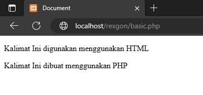

Belajar PHP
Pendahuluan
Kalian mau Ngoding tapi masih ngga ngerti konsepnya?
Tenang aja! kali ini aku bakal ajarin kalian cara ngoding sebuah bahasa pemograman yang bernama PHP.
Basic PHP
Membuka Sever
Deklarasi PHP
Basic HTML
Pertama siapin dulu nih alat buat ngoding kalian, seperti Komputer, dan Laptop.
Alat alat yang harus kalian siapin yaitu : Visual Studio
Code untuk Windows dan MacOS. | XAMPP untuk
membuka server php di browser.
Oke kalo udah di install dan siap untuk digunakan, ayo kita lanjut ke tahap berikutnya.
Membuka server
Cara membuka servernya adalah :
Kalian Buka terlebih dahulu XAMPP kalian
Dan Nyalakan Server Apache seperti pada gambar ini

Jika sudah membuka server apache, kita lanjut membuat folder didalam htdocs.
Untuk direktori htdocs kalian bisa lihat kode dibawah ini
C:\xampp\htdocsKenapa C?, karena saya menaruh file installasi XAMPP di direktori C
Jika Kalian menaruh di direktori D atau E kalian bisa mengganti nya ke direktori yang kalian pilih.
Deklarasi PHP
Syntax ini mungkin sama dengan HTML biasa, tetapi ada bahasa php didalamnya. Kalian bisa melihat atau mengikuti cara dibawah ini.
<!DOCTYPE html>
<html lang="en">
<head>
<title>Belajar PHP</title>
</head>
<body>
<p>Kalimat Ini digunakan menggunakan HTML</p>
<?php
echo "<p>Kalimat Ini dibuat menggunakan PHP</p>";
?>
</body>
</html>Output

Btw kalian bisa copy contoh diatas kok.